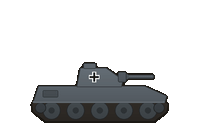
Panzer II
Armour · from 1939
- Soft
- 9
- Hard
- 6
- Air
- 0
- Naval
- 0
- Def
- 5
- Air def
- 0
- Init
- 7
- Move
- 6
Range 1 · Cost 120 prestige
Upgrades to Panzer III
Every unit in the war
From the Polish cavalry of 1939 to the jets of 1945, with the line of equipment each one re-equips through.
Every one of the game's 126 unit types, as the in-game Armoury shows them: the numbers combat uses at full strength, before terrain, experience or medals. Each unit fields 10 strength points, and its attack falls as it loses them. Experience adds to all of it: each grade from Green to Guards adds a point of attack and a tenth to defence.
40 types · Germany, Italy and Romania

Armour · from 1939
Range 1 · Cost 120 prestige
Upgrades to Panzer III
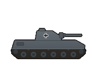
Armour · from 1939
Range 1 · Cost 150 prestige
Upgrades to Panzer IV
Upgraded from Panzer II
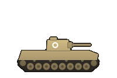
Italy · Armour · from 1940
Range 1 · Cost 115 prestige
The last of its line
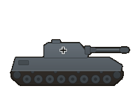
Armour · from 1941
Range 1 · Cost 170 prestige
Upgrades to Panther
Upgraded from Panzer III
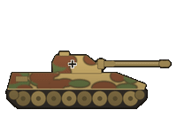
Armour · from 1943
Range 1 · Cost 220 prestige
Upgrades to Tiger II
Upgraded from Panzer IV
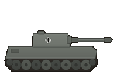
Armour · from 1943
Range 1 · Cost 240 prestige
Upgrades to Tiger II
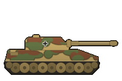
Armour · from 1944
Range 1 · Cost 290 prestige
The last of its line
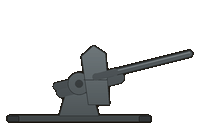
Anti-tank and assault guns · from 1939
Range 2 · Cost 130 prestige
Upgrades to StuG III
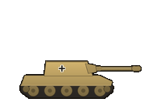
Anti-tank and assault guns · from 1942
Range 1 · Cost 120 prestige
Upgrades to Hetzer
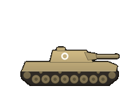
Italy · Anti-tank and assault guns · from 1942
Range 1 · Cost 125 prestige
The last of its line
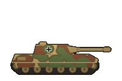
Anti-tank and assault guns · from 1942
Range 1 · Cost 140 prestige
Upgrades to Jagdpanzer IV
Upgraded from 88mm FlaK
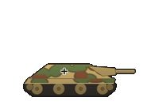
Anti-tank and assault guns · from 1944
Range 1 · Cost 160 prestige
The last of its line
Upgraded from Marder II
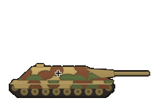
Anti-tank and assault guns · from 1944
Range 1 · Cost 210 prestige
Upgrades to Jagdpanther
Upgraded from StuG III
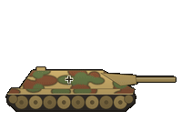
Anti-tank and assault guns · from 1944
Range 1 · Cost 280 prestige
The last of its line
Upgraded from Jagdpanzer IV
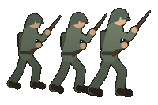
Infantry · from 1939
Range 1 · Cost 80 prestige
Upgrades to Grenadiere
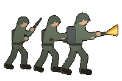
Infantry · from 1939
Range 1 · Cost 90 prestige
Upgrades to Sturmpioniere
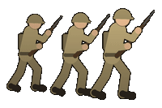
Italy · Infantry · from 1940
Range 1 · Cost 65 prestige
The last of its line
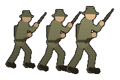
Romania · Infantry · from 1941
Range 1 · Cost 60 prestige
The last of its line
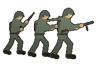
Infantry · from 1943
Range 1 · Cost 95 prestige
The last of its line
Upgraded from Infanterie
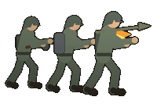
Infantry · from 1943
Range 1 · Cost 115 prestige
The last of its line
Upgraded from Pioniere
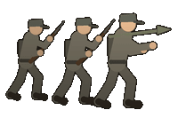
Infantry · from 1944
Range 1 · Cost 50 prestige
Not for sale: raised only in the battles that field it
The last of its line
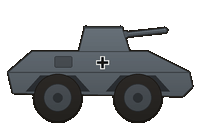
Reconnaissance · from 1939
Range 1 · Cost 90 prestige
Upgrades to SdKfz 234 Puma
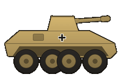
Reconnaissance · from 1943
Range 1 · Cost 130 prestige
The last of its line
Upgraded from SdKfz 222
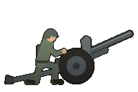
Artillery · from 1939
Range 3 · Cost 100 prestige
Upgrades to Hummel
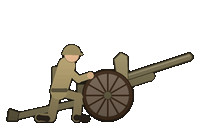
Italy · Artillery · from 1940
Range 3 · Cost 85 prestige
The last of its line
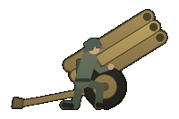
Artillery · from 1942
Range 2 · Cost 120 prestige
Upgrades to Panzerwerfer 42
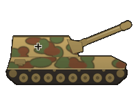
Artillery · from 1943
Range 3 · Cost 150 prestige
The last of its line
Upgraded from Artillerie
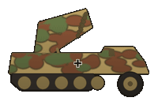
Artillery · from 1943
Range 2 · Cost 160 prestige
The last of its line
Upgraded from Nebelwerfer
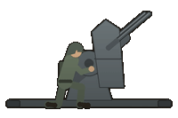
Air defence · from 1939
Range 1 · Cost 90 prestige
Upgrades to Wirbelwind
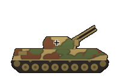
Air defence · from 1944
Range 1 · Cost 170 prestige
The last of its line
Upgraded from 2cm Flak 38
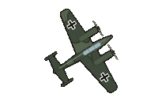
Fighters · from 1939
Range 1 · Cost 190 prestige
Upgrades to Me 410
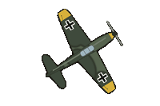
Fighters · from 1939
Range 1 · Cost 200 prestige
Upgrades to Fw 190
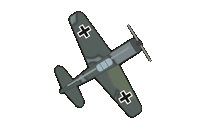
Fighters · from 1942
Range 1 · Cost 230 prestige
Upgrades to Me 262
Upgraded from Bf 109
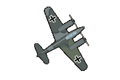
Fighters · from 1943
Range 1 · Cost 240 prestige
The last of its line
Upgraded from Bf 110
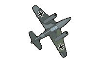
Fighters · from 1944
Range 1 · Cost 320 prestige
The last of its line
Upgraded from Fw 190
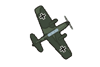
Ground-attack aircraft · from 1939
Range 1 · Cost 180 prestige
Upgrades to Ju 87G
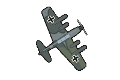
Ground-attack aircraft · from 1943
Range 1 · Cost 200 prestige
The last of its line
Upgraded from Ju 87 Stuka
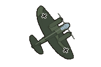
Bombers · from 1939
Range 1 · Cost 200 prestige
Upgrades to Ju 88
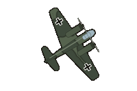
Bombers · from 1940
Range 1 · Cost 230 prestige
Upgrades to Ju 188
Upgraded from He 111
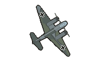
Bombers · from 1943
Range 1 · Cost 270 prestige
The last of its line
Upgraded from Ju 88
28 types
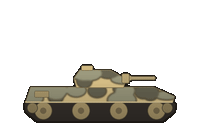
Armour · from 1940
Range 1 · Cost 120 prestige
Upgrades to Crusader
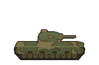
Armour · from 1940
Range 1 · Cost 160 prestige
Upgrades to Churchill
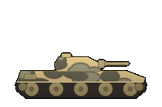
Armour · from 1941
Range 1 · Cost 140 prestige
Upgrades to Cromwell
Upgraded from Cruiser A13
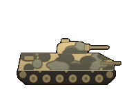
Armour · from 1942
Range 1 · Cost 165 prestige
Upgrades to Sherman Firefly
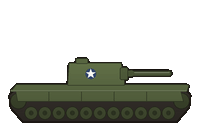
Armour · from 1942
Range 1 · Cost 180 prestige
The last of its line
Upgraded from Matilda II
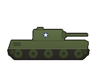
Armour · from 1944
Range 1 · Cost 185 prestige
Upgrades to Comet
Upgraded from Crusader
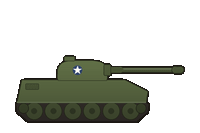
Armour · from 1944
Range 1 · Cost 200 prestige
The last of its line
Upgraded from Grant
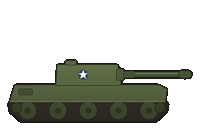
Armour · from 1945
Range 1 · Cost 230 prestige
The last of its line
Upgraded from Cromwell
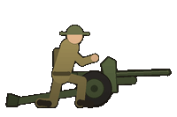
Anti-tank and assault guns · from 1939
Range 1 · Cost 80 prestige
Upgrades to 6-pounder
Anti-tank and assault guns · from 1942
Range 1 · Cost 100 prestige
Upgrades to 17-pounder
Upgraded from 2-pounder
Anti-tank and assault guns · from 1943
Range 1 · Cost 130 prestige
Upgrades to Achilles
Upgraded from 6-pounder
Anti-tank and assault guns · from 1944
Range 1 · Cost 180 prestige
The last of its line
Upgraded from 17-pounder
Infantry · from 1940
Range 1 · Cost 80 prestige
Upgrades to Infantry '43
Infantry · from 1943
Range 1 · Cost 85 prestige
The last of its line
Upgraded from Infantry
Reconnaissance · from 1939
Range 1 · Cost 70 prestige
Upgrades to Daimler Armoured Car
Reconnaissance · from 1941
Range 1 · Cost 100 prestige
The last of its line
Upgraded from Universal Carrier
Artillery · from 1939
Range 3 · Cost 105 prestige
Upgrades to Sexton
Artillery · from 1943
Range 3 · Cost 150 prestige
The last of its line
Upgraded from 25-pounder
Air defence · from 1939
Range 1 · Cost 90 prestige
Upgrades to 3.7-inch AA
Air defence · from 1939
Range 2 · Cost 110 prestige
The last of its line
Upgraded from Bofors 40mm
Fighters · from 1939
Range 1 · Cost 180 prestige
Upgrades to Spitfire
Fighters · from 1940
Range 1 · Cost 200 prestige
Upgrades to Tempest
Upgraded from Hurricane
Fighters · from 1944
Range 1 · Cost 240 prestige
The last of its line
Upgraded from Spitfire
Ground-attack aircraft · from 1939
Range 1 · Cost 150 prestige
Upgrades to Mosquito
Ground-attack aircraft · from 1942
Range 1 · Cost 220 prestige
Upgrades to Typhoon
Upgraded from Blenheim
Ground-attack aircraft · from 1943
Range 1 · Cost 210 prestige
The last of its line
Upgraded from Mosquito
Bombers · from 1939
Range 1 · Cost 190 prestige
Upgrades to Lancaster
Bombers · from 1942
Range 1 · Cost 270 prestige
The last of its line
Upgraded from Wellington
19 types
Armour · from 1942
Range 1 · Cost 120 prestige
Upgrades to M4 Sherman
Armour · from 1942
Range 1 · Cost 170 prestige
Upgrades to M4A3E8 Sherman
Upgraded from M3 Stuart
Armour · from 1944
Range 1 · Cost 200 prestige
Upgrades to M26 Pershing
Upgraded from M4 Sherman
Armour · from 1945
Range 1 · Cost 230 prestige
The last of its line
Upgraded from M4A3E8 Sherman
Anti-tank and assault guns · from 1942
Range 1 · Cost 95 prestige
Upgrades to M10
Anti-tank and assault guns · from 1943
Range 1 · Cost 150 prestige
Upgrades to M18 Hellcat
Upgraded from 57mm Gun
Anti-tank and assault guns · from 1944
Range 1 · Cost 175 prestige
Upgrades to M36 Jackson
Upgraded from M10
Anti-tank and assault guns · from 1944
Range 1 · Cost 210 prestige
The last of its line
Upgraded from M18 Hellcat
Infantry · from 1942
Range 1 · Cost 85 prestige
Upgrades to Airborne
Infantry · from 1943
Range 1 · Cost 100 prestige
The last of its line
Upgraded from US Infantry
Artillery · from 1942
Range 3 · Cost 110 prestige
Upgrades to M7 Priest
Artillery · from 1943
Range 3 · Cost 155 prestige
The last of its line
Upgraded from Field Artillery
Fighters · from 1942
Range 1 · Cost 180 prestige
Upgrades to P-38 Lightning
Fighters · from 1943
Range 1 · Cost 220 prestige
Upgrades to P-51 Mustang
Upgraded from P-40 Warhawk
Fighters · from 1944
Range 1 · Cost 240 prestige
The last of its line
Upgraded from P-38 Lightning
Ground-attack aircraft · from 1942
Range 1 · Cost 180 prestige
Upgrades to P-47 Thunderbolt
Ground-attack aircraft · from 1943
Range 1 · Cost 220 prestige
The last of its line
Upgraded from A-20 Havoc
Bombers · from 1942
Range 1 · Cost 210 prestige
Upgrades to B-17
Bombers · from 1942
Range 1 · Cost 260 prestige
The last of its line
Upgraded from B-25 Mitchell
29 types
Armour · from 1941
Range 1 · Cost 100 prestige
Upgrades to T-34
Armour · from 1941
Range 1 · Cost 105 prestige
Upgrades to T-34
Armour · from 1941
Range 1 · Cost 175 prestige
Upgrades to T-34/76
Armour · from 1941
Range 1 · Cost 190 prestige
Upgrades to IS-2
Armour · from 1943
Range 1 · Cost 180 prestige
Upgrades to T-34/85
Upgraded from T-34
Armour · from 1944
Range 1 · Cost 200 prestige
The last of its line
Upgraded from T-34/76
Armour · from 1944
Range 1 · Cost 260 prestige
The last of its line
Upgraded from KV-1
Anti-tank and assault guns · from 1941
Range 1 · Cost 80 prestige
Upgrades to ZiS-3
Anti-tank and assault guns · from 1942
Range 1 · Cost 100 prestige
Upgrades to SU-76
Upgraded from 45mm PTO
Anti-tank and assault guns · from 1943
Range 1 · Cost 120 prestige
Upgrades to SU-100
Upgraded from ZiS-3
Anti-tank and assault guns · from 1943
Range 1 · Cost 190 prestige
Upgrades to ISU-152
Anti-tank and assault guns · from 1944
Range 1 · Cost 220 prestige
The last of its line
Upgraded from SU-76
Anti-tank and assault guns · from 1944
Range 1 · Cost 240 prestige
The last of its line
Upgraded from SU-152
Infantry · from 1941
Range 1 · Cost 60 prestige
Upgrades to Gvardiya
Infantry · from 1943
Range 1 · Cost 75 prestige
Upgrades to Udarnaya
Upgraded from Strelki
Infantry · from 1944
Range 1 · Cost 80 prestige
The last of its line
Upgraded from Gvardiya
Reconnaissance · from 1941
Range 1 · Cost 80 prestige
Upgrades to BA-64
Reconnaissance · from 1942
Range 1 · Cost 95 prestige
The last of its line
Upgraded from Kavaleriya
Artillery · from 1941
Range 3 · Cost 90 prestige
Upgrades to 152mm ML-20
Artillery · from 1942
Range 3 · Cost 130 prestige
Upgrades to BM-31-12
Artillery · from 1943
Range 3 · Cost 100 prestige
The last of its line
Upgraded from 122mm M-30
Artillery · from 1944
Range 3 · Cost 160 prestige
The last of its line
Upgraded from Katyusha
Fighters · from 1941
Range 1 · Cost 150 prestige
Upgrades to Yak-9
Fighters · from 1942
Range 1 · Cost 190 prestige
Upgrades to La-7
Upgraded from I-16
Fighters · from 1944
Range 1 · Cost 230 prestige
The last of its line
Upgraded from Yak-9
Ground-attack aircraft · from 1941
Range 1 · Cost 170 prestige
Upgrades to Tu-2
Ground-attack aircraft · from 1941
Range 1 · Cost 190 prestige
Upgrades to Il-10
Ground-attack aircraft · from 1943
Range 1 · Cost 210 prestige
The last of its line
Upgraded from Pe-2
Ground-attack aircraft · from 1944
Range 1 · Cost 220 prestige
The last of its line
Upgraded from Il-2 Shturmovik
10 types · Poland, France, Greece and Yugoslavia
Armour · from 1939
Range 1 · Cost 110 prestige
The last of its line
France · Armour · from 1940
Range 1 · Cost 150 prestige
The last of its line
Infantry · from 1939
Range 1 · Cost 70 prestige
The last of its line
France · Infantry · from 1940
Range 1 · Cost 75 prestige
The last of its line
Yugoslavia · Infantry · from 1941
Range 1 · Cost 55 prestige
The last of its line
Greece · Infantry · from 1941
Range 1 · Cost 75 prestige
The last of its line
Reconnaissance · from 1939
Range 1 · Cost 80 prestige
The last of its line
Artillery · from 1939
Range 3 · Cost 90 prestige
The last of its line
France · Artillery · from 1940
Range 3 · Cost 95 prestige
The last of its line
Greece · Artillery · from 1941
Range 3 · Cost 85 prestige
The last of its line
Reading the numbers
A unit's line of equipment is the chain it re-equips through at Headquarters: a core unit upgraded to the next type keeps its experience, name and medals. The full rules are in How to Play.